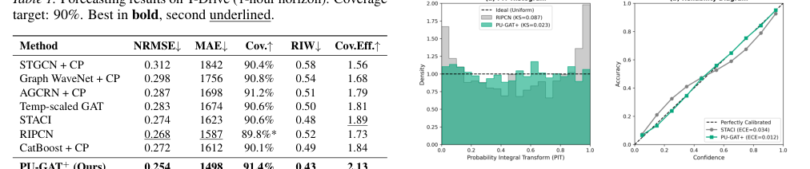
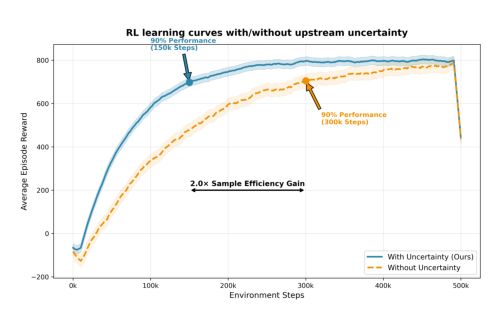

Safe
简单摘要
这篇工作要解决的问题是：城市交通管理要求系统能够同时预测未来状况、检测异常情况并采取安全的纠正措施，同时提供可靠性保证。
对应的核心做法是：我们提出了 STREAM-RL，这是一个统一的框架，引入了三种新颖的算法贡献。
从机制上看，关键设计在于：(1) PU-GAT，一种不确定性引导的自适应共形预测器，利用预测不确定性通过置信单调注意力动态重新加权图注意力，实现无分布的覆盖保证；。
训练或推理层面的重点是：(2) CRFN-BY，一种保形残差流网络，通过任意依赖下的 Benjamini-Yekutieli FDR 控制对流进行归一化，对不确定性归一化残差进行建模；。
实验层面的主要信号是：(3) LyCon-WRL，一种不确定性引导的安全世界模型 RL 代理，具有 Lyapunov 稳定性证书、经过认证的 Lipschitz 边界和不确定性传播的想象力推出。


简而言之，这篇论文关注的核心是：这篇工作要解决的问题是：城市交通管理要求系统能够同时预测未来状况、检测异常情况并采取安全的纠正措施，同时提供可靠性保证。 对应的核心做法是：我们提出了 STREAM-RL，这是一个统一的框架，引入了三种新颖的算法贡献。 从机制上看，关键设计在于：(1) PU-GAT，一种不确定性引导的自适应共形预…
这篇工作要解决的问题是：经济 \ _ij (e_ij/(1 + _i)) ^+ 0 _i > _j j s_t^(i) = - p_(z_t^(i) | c_t^(i)) C_trim ^+ L_L J_W 关于 Lipschitz 常数。
对应的核心做法是：其中界限是在训练期间通过谱归一化（而不是事后估计）强制执行的，解决了先前工作中提出的理论假设和实际验证之间的差距。
核心创新
综合引言与方法部分，这篇论文的核心创新可以概括为以下几方面：
1）问题定义与研究动机
这篇工作要解决的问题是：经济 \ _ij (e_ij/(1 + _i)) ^+ 0 _i > _j j s_t^(i) = - p_(z_t^(i) | c_t^(i)) C_trim ^+ L_L J_W 关于 Lipschitz 常数。
对应的核心做法是：其中界限是在训练期间通过谱归一化（而不是事后估计）强制执行的，解决了先前工作中提出的理论假设和实际验证之间的差距。
2）方法框架与核心模块
这篇工作要解决的问题是：置信度-单调注意力动机。
对应的核心做法是：为什么温度缩放失败考虑之前工作中使用的温度缩放注意力。
从机制上看，关键设计在于：不确定性仅影响 softmax 分布的温度——它无法区分自信和不确定的邻居。
训练或推理层面的重点是：命题[温度标度限制] 对于温度标度注意力（等式1）。
实验层面的主要信号是：），任意两个邻居之间的相对注意力比率与其不确定性无关。
3）实验设计与工程价值
这篇工作要解决的问题是：真实事件 FDR 计算使用市政记录中记录的交通事件（事故、道路封闭、重大拥堵事件）作为真实异常；。
对应的核心做法是：所有其他时间位置对都被视为空值。
从机制上看，关键设计在于：尽管我们承认官方记录中存在固有的噪音，但该标签协议可以对真实数据进行有意义的 FDR 评估。
训练或推理层面的重点是：4×4 网格，16 个交叉点，NEMA 双环定相。
实验层面的主要信号是：更大的网络是未来的重要工作（第 1 节）。
技术细节
下面按照论文的方法章节结构展开，重点说明模型的关键模块、公式设计和训练策略。
这篇工作要解决的问题是：置信度-单调注意力动机。
对应的核心做法是：为什么温度缩放失败考虑之前工作中使用的温度缩放注意力。
从机制上看，关键设计在于：不确定性仅影响 softmax 分布的温度——它无法区分自信和不确定的邻居。
训练或推理层面的重点是：命题[温度标度限制] 对于温度标度注意力（等式1）。
实验层面的主要信号是：），任意两个邻居之间的相对注意力比率与其不确定性无关。
$$ \alpha_{ij} = \text{softmax}_j\Big(e_{ij} + \underbrace{\text{Softplus}(\tilde{\gamma})}_{\gamma \geq 0}(\sigma_i - \sigma_j) + \delta \cdot \mathbf{1}[j = i]\Big) $$
这条公式用于定义模型中的核心计算关系：左侧给出目标量，右侧由输入与参数共同决定。阅读时可先关注 j、i 的物理/几何含义，再看它们如何影响训练目标或渲染结果。
$$ p_t^{(i)} = \frac{1 + \sum_{j \in \mathcal{C}_{\text{trim}}} \mathbf{1}[s_j \geq s_t^{(i)}]}{1 + |\mathcal{C}_{\text{trim}}|} $$
这条公式用于定义模型中的核心计算关系：左侧给出目标量，右侧由输入与参数共同决定。阅读时可先关注 p_t、i、j、C 的物理/几何含义，再看它们如何影响训练目标或渲染结果。
$$ \varepsilon^* = \frac{\delta_{\text{slack}} + \kappa \cdot \bar{d}_C}{\bar{L}_L \cdot (1 + \bar{J}_W)} $$
这条公式用于定义模型中的核心计算关系：左侧给出目标量，右侧由输入与参数共同决定。阅读时可先关注 d、L、J 的物理/几何含义，再看它们如何影响训练目标或渲染结果。
$$ \text{FDR} = \mathbb{E}\left[\frac{|\{i: H_i^0 \text{ true}, p_t^{(i)} \leq \tau\}|}{|\{i: p_t^{(i)} \leq \tau\}| \vee 1}\right] \leq \alpha $$
这条公式用于定义模型中的核心计算关系：左侧给出目标量，右侧由输入与参数共同决定。阅读时可先关注 E、i、H_i、p_t 的物理/几何含义，再看它们如何影响训练目标或渲染结果。
$$ \alpha_{ij}^{\text{temp}} = \frac{\exp(e_{ij} / (1 + \beta\sigma_i))}{\sum_{k \in \mathcal{N}(i)} \exp(e_{ik} / (1 + \beta\sigma_i))} $$
这条公式用于定义模型中的核心计算关系：左侧给出目标量，右侧由输入与参数共同决定。阅读时可先关注 k、N、i 的物理/几何含义，再看它们如何影响训练目标或渲染结果。

把全文方法串起来看，这篇论文的逻辑基本都遵循同一条主线：先把输入组织成更容易处理的表示，再通过模型结构和损失函数把这个表示推向目标输出，最后用可视化与数值实验共同证明该设计有效。
实验结论
实验部分主要回答两个问题：第一，方法是否真的优于已有基线；第二，这种优势来自哪一个设计决策。
这篇工作要解决的问题是：真实事件 FDR 计算使用市政记录中记录的交通事件（事故、道路封闭、重大拥堵事件）作为真实异常；。
对应的核心做法是：所有其他时间位置对都被视为空值。
从机制上看，关键设计在于：尽管我们承认官方记录中存在固有的噪音，但该标签协议可以对真实数据进行有意义的 FDR 评估。
训练或推理层面的重点是：4×4 网格，16 个交叉点，NEMA 双环定相。
实验层面的主要信号是：更大的网络是未来的重要工作（第 1 节）。
- 方法在核心指标上的优势与结构设计和训练目标直接相关；
- 消融实验表明，拿掉关键模块后性能与结果质量都有明显回落；
- 论文不仅比较数值，也关注可视化质量、稳定性和泛化能力等更贴近真实使用的信号。
理解评价
这篇工作要解决的问题是：我们推出了 STREAM-RL，这是一个解决安全城市交通控制的三个基本挑战的统一框架。
对应的核心做法是：PU-GAT 提供置信度单调注意力，可证明优先考虑可靠的邻居。
从机制上看，关键设计在于：CRFN-BY 在任意时空依赖性下提供具有 FDR 保证的保形 p 值构造。
训练或推理层面的重点是：LyCon-WRL 通过光谱归一化强制 Lipschitz 界限将理论安全证书和实际验证联系起来。
实验层面的主要信号是：四个数据集的实验验证了协同效益。
如果把它当成研究参考，建议重点关注三件事：第一，这套方法真正依赖的归纳偏置是什么；第二，实验中真正拉开差距的模块是哪一个；第三，它的局限究竟来自数据、算力还是监督信号本身。
以下相关论文可以作为进一步追踪的入口：